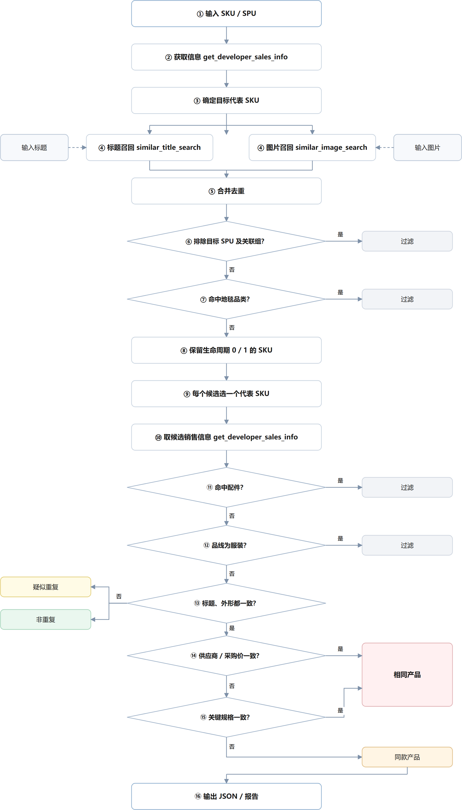
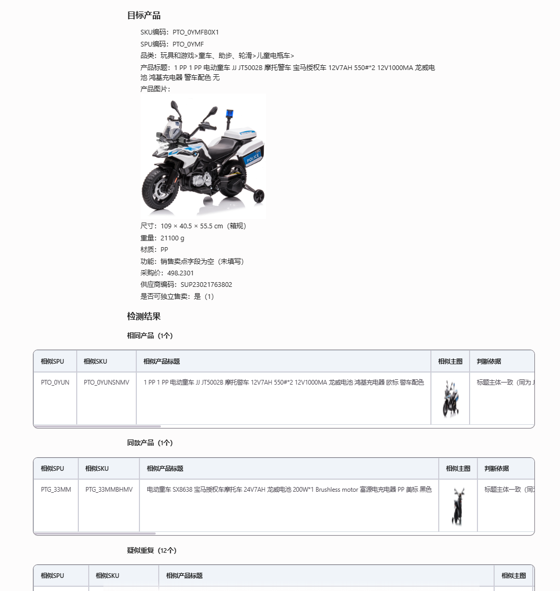
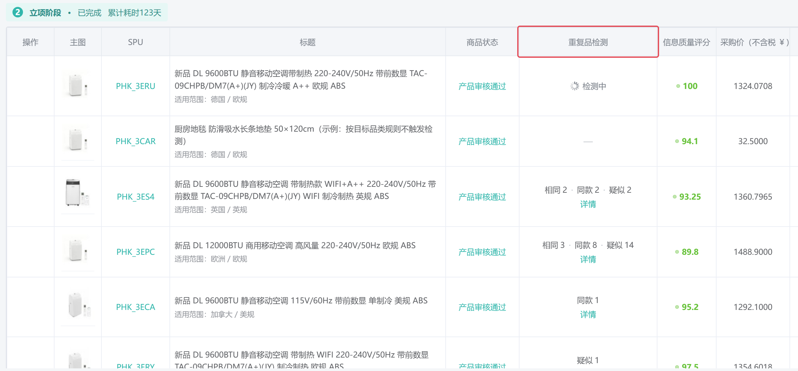
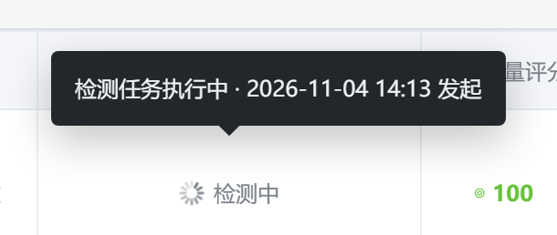
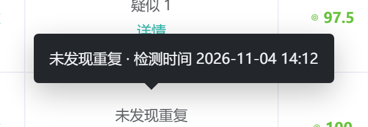
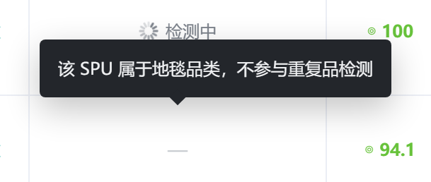
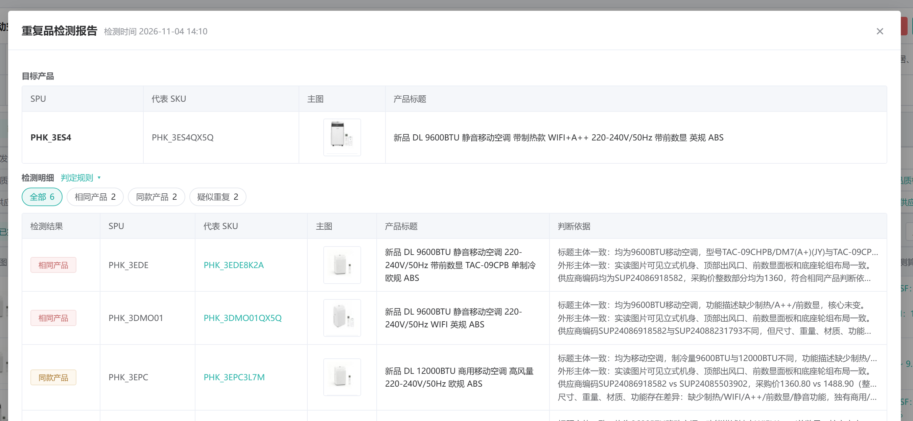
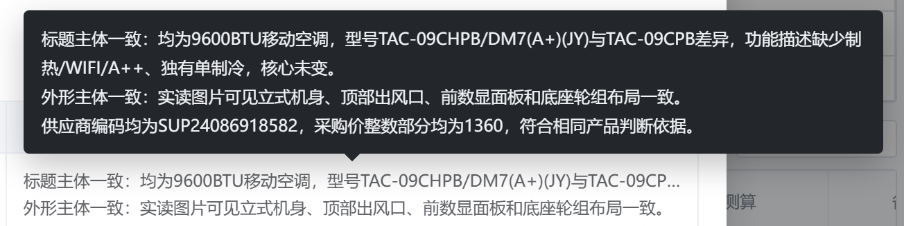
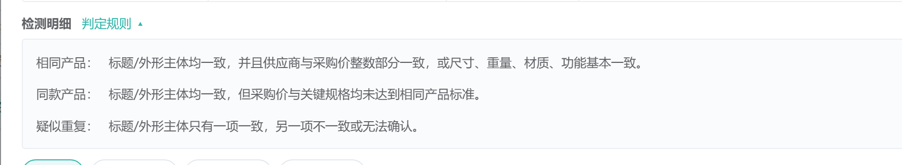

重复品检测 · 产品方案
把现在只能在对话里跑的重复开品检测 Skill 接进 ERP，在项目 SPU 列表上直接给出结论。系统负责流程与规则，模型只负责「标题像不像、外形像不像」。
版本记录
| 版本 | 日期 | 状态 | 变更内容 |
|---|---|---|---|
| V1.0 | 2026-11-13 | 新建 | 新建。尚未评审。 |
相关文件
| 文件 | 内容 |
|---|---|
| https://tianawynn.github.io/product-prototypes/ | 交互原型（当前版本），本方案的页面截图均取自这里，可直接点开走一遍 |
一、背景与目标
（一）背景
为规范系统内项目的开品管理，减少同一款产品被重复创建为多个 SPU 的情况。重复开品会带来备货与产品资料的重复维护，也会造成返点归属冲突。
系统内已具备重复开品检测能力，覆盖从候选召回到重复判定的完整流程。但当前仅支持对话调用，需人工发起，检测时点与检测对象依赖人工判断，使用情况只能通过定期拉取对话数据获得。
检测结果不落系统，触发人、时间、候选范围与判断依据均无记录。项目内哪些产品查过、结论如何，无法统一查看，也无法统计重复情况。
（二）目标
把检测能力接入系统，随 SPU 创建自动执行，使项目内每个 SPU 都有统一的检测记录与结论，实现项目范围的统一管理与校验。
- 能看见：项目详情页 SPU 列表新增「重复品检测」列，无需主动查询即可获知重复情况。
- 能追溯：每次检测的触发来源、触发时间、候选范围与判断依据均可回溯。
- 能评估：上线后可统计重复率，以及重复率与品类的交叉分布，判断重复集中在哪些品类，作为推广范围与管控重点的依据。
二、重复开品检测能力
本章说明现有检测能力能做什么、按什么规则判、返回什么结果。接进系统时，这些口径原样沿用，不改判断逻辑。
（一）能力边界
同一套判断逻辑，两种调用方式，差别只在输入和谁发起。
| 使用方式 | 输入 | 输出 | 谁发起 |
|---|---|---|---|
| 对话场景 | SKU / SPU 编码、产品标题、产品图片，单目标或多目标 | 检测报告 + 结构化 JSON | 人在对话里主动查询 |
| 系统场景（接入 ERP） | SPU 编码，每次一个目标 | 只返回结构化 JSON | 系统按触发规则自动发起 |
召回口径、判定规则、三档结论两边完全一致。系统侧只是把输入收窄成 SPU、输出收窄成 JSON，判断逻辑不变。
（二）检测流程

（三）判定规则
先看标题和外形两个主体，两个都一致时才用价格和规格区分「相同」还是「同款」。
| 标题主体 | 外形主体 | 补充条件 | 结果 |
|---|---|---|---|
| 一致 | 一致 | 供应商编码一致，或采购价整数部分一致 | 相同产品 |
| 一致 | 一致 | 尺寸 / 重量 / 材质 / 功能基本一致（尺寸重量 ±5%） | 相同产品 |
| 一致 | 一致 | 以上都不满足 | 同款产品 |
| 一致 | 不一致 | — | 疑似重复 |
| 一致 | 无法确认 | 图片读不到或缺失 | 疑似重复 |
| 不一致 | 一致 | — | 疑似重复 |
| 不一致 | 不一致 / 无法确认 | — | 非重复 |
系统场景输入固定是 SPU，标题一定存在，不会出现「标题主体无法比较」，所以这里只列七种组合。对话场景仅输入图片时会多出三种（标题无法比较 × 外形一致 / 不一致 / 无法确认），结论落在疑似或非重复，不影响系统侧。
（四）输出结果
对话场景出检测报告，系统场景只返回结构化 JSON。两者数据同源，报告由 JSON 渲染。
1. 检测报告（对话场景）
单目标固定三段，顺序与列名不可改：目标产品（12 项基础资料）→ 检测结果（相同 / 同款 / 疑似三张独立表）→ 结论（是否存在重复开品、三类数量、建议处理）。三张表列不同：同款多一列「差异点」，疑似多「疑似原因」「需确认项」。

多目标时先出汇总表（# / 目标SPU / 目标SKU / 状态 / 相同 / 同款 / 疑似 / 结论 固定 8 列），有重复或异常的目标再展开明细，无重复的只在汇总表出现。
2. 结构化 JSON（系统场景）
顶层是数组，单目标也返回长度 1 的数组，顺序与输入一致。返回的字段全部入库，区别只在用途——一部分直接驱动页面展示，一部分不在页面上出原值、留给筛选统计与事后排查。
驱动页面渲染的：目标五项（target_spu / target_sku / target_title / target_category / target_image）定位并展示目标卡片；status 定成败；三类计数直接写进列表；duplicate_items 拆行写入检测明细；summary 不入页面，只入库供追溯与人工排查。
不直接展示、但照样入库的：error_message 记异常与降级原因，弹窗只区分「检测失败」并给固定文案，具体取值见「（五）检测说明全文」；is_duplicate 是有无重复的快捷标记，供列表筛选与重复率统计；non_duplicate_spus / non_duplicate_count 记比对范围，回答「这个 SPU 跟哪些比过」；candidate_count 用于校验。
is_duplicate 是「或」逻辑，相同或同款任一 > 0 就返回「是」，一个「是」装不下三类构成。列表直接用三类计数，该字段只作筛选与统计的快捷口径。
duplicate_items 里每条的 duplicate_type 统计；non_duplicate_count 取 non_duplicate_spus 的数组长度；candidate_count = 三者之和 + 非重复。返回的计数只作参考，与明细对不上时以明细为准重算，记一条 error_message 备注即可，不判检测失败。
展开查看结构化 JSON 示例（单目标，明细只列 2 条示意）
[
{
"target_spu": "PHO_0ZO8",
"target_sku": "PHO_0ZO8P23T",
"target_title": "4抽三角纹面板 MDF+PB+铁 斗柜 白色",
"target_category": "家具/收纳家具/斗柜",
"target_image": "https://img.example.com/pho0zo8.jpg",
"status": "已完成",
"is_duplicate": "是",
"same_product_count": 0,
"same_style_count": 1,
"suspected_count": 1,
"non_duplicate_count": 3,
"non_duplicate_spus": ["PHO_5E6F", "PHO_7G8H", "PHO_9I0J"],
"candidate_count": 5,
"summary": "PHO_0ZO8（代表SKU PHO_0ZO8P23T，4抽三角纹面板 MDF+PB+铁 斗柜 白色）存在重复开品：1个同款产品（同系列三角纹面板斗柜的不同抽数/颜色）、1个疑似重复（面板纹理不同的抽屉柜），3个候选判为非重复；召回后另有4个候选因SKU生命周期不在0/1状态被过滤。",
"duplicate_items": [
{
"duplicate_type": "同款产品",
"similar_spu": "PHO_1A2B",
"similar_sku": "PHO_1A2BP11K",
"similar_title": "5抽三角纹面板 MDF+PB+铁 斗柜 黑色",
"similar_category": "家具/收纳家具/斗柜",
"similar_image": "https://img.example.com/pho1a2b.jpg",
"recall_source": "标题+图片",
"title_judgement": "标题主体一致",
"image_judgement": "外形主体一致",
"image_summary": "两者均为长方形柜体、直角柜脚，面板同为三角纹贴面，柜体比例接近",
"image_analysis_source": "模型视觉",
"reason": "标题主体同为三角纹面板斗柜，核心对象与用途一致；外形均为长方形柜体、三角纹面板、直角柜脚；供应商编码不同，采购价 189 与 175 不一致；抽数 4 抽与 5 抽，尺寸存在差异",
"reason_brief": "标题主体一致，外形主体一致，供应商/采购价存在差异，尺寸存在差异",
"difference": "抽数 4 抽 vs 5 抽，颜色白色 vs 黑色",
"suggestion": "可并存，按同款关联展示"
},
{
"duplicate_type": "疑似重复",
"similar_spu": "PHO_3C4D",
"similar_sku": "PHO_3C4DP08M",
"similar_title": "4抽平板面板 MDF+PB 斗柜 白色",
"similar_category": "家具/收纳家具/斗柜",
"similar_image": "https://img.example.com/pho3c4d.jpg",
"recall_source": "图片",
"title_judgement": "标题主体一致",
"image_judgement": "外形主体不一致",
"image_summary": "候选面板为平板无纹理，目标为三角纹贴面，面板形态不同",
"image_analysis_source": "模型视觉",
"reason": "标题主体同为 4 抽斗柜，核心对象与用途一致；外形上面板由三角纹贴面变为平板，主体形态不同",
"reason_brief": "标题主体一致，外形主体不一致",
"difference": "",
"suggestion": "人工确认是否为同一款"
}
],
"error_message": ""
}
]（五）检测说明全文
下面这份是当前正式服版本的渲染稿，规则细节、字段口径、输出模板都在里面：
源文件：更改正式服main的skill/skill1_重复开品检测/SKILL.md（渲染稿与本方案放在同一目录，离线可看）
三、入口
位置：项目详情页 → SPU 列表 → 新增「重复品检测」列，位于「商品状态」列之后、「信息质量评分」列之前。

四、检测状态
列表上每种状态占两行：一个展示 + 一个动作。后台只记检测状态；有重复时直接展示三类计数，不合成结论标签。
（一）状态模型
- 页面检测状态：未检测 / 检测中 / 检测成功 / 检测失败 / 无需检测。只有检测中、检测成功、检测失败会写记录。
- 三类计数：相同 / 同款 / 疑似，检测成功时才有值，直接决定列表上写什么。
（二）状态判定
页面检测状态决定这次有没有跑完，三类计数决定跑出来是什么。只有「检测成功」才看计数，其余状态不产生构成。
| 页面检测状态 | 判定条件 | 列表显示 |
|---|---|---|
| 未检测 | 无任务记录，且未命中排除规则（不落库，查询时判定） | 未检测 + 「立即检测」 |
| 检测中 | 已提交，未取得终态 | ◌ 检测中 |
| 检测成功 | 相同 > 0（同款、疑似任意） | 相同 2 · 同款 2 · 疑似 2 + 「详情」 |
| 相同 = 0，同款 > 0 | 同款 1 · 疑似 1 + 「详情」 | |
| 相同 = 0、同款 = 0，疑似 > 0 | 疑似 1 + 「详情」 | |
| 三者均为 0 | 未发现重复 + 「重新检测」 | |
| 检测失败 | 查不到产品信息，或两路召回均失败、结果解析与校验不通过 | 检测失败 + 「重新检测」 |
| 无需检测 | 无任务记录，且命中排除规则（不落库，查询时判定） | — 横杠占位 |
页面不显示结论词：有重复时直接写构成，三者全为 0 时写「未发现重复」。页面上叫「检测成功」，Skill 返回的 status 是「已完成」，落库时映射一次：已完成 → 检测成功，无产品信息 / 查询失败 → 检测失败（失败原因走列表悬浮，不另开弹窗）。
判断「有没有重复开品」看 is_duplicate（是 / 疑似 / 否），等价于「相同 + 同款 > 0」。它只用于筛选与统计，不用于列表显示——一个三值字段装不下三类构成。
（三）列表展示规则
每种状态在列表上只有两行位置：上面是状态本身，下面是一个动作。构成与时间这类「看得懂但不需要点开」的信息，全部走悬浮，不占列表空间。悬浮统一为黑底白字、向上弹出，不出现鼠标旁的问号。
| 状态 | 列表显示 | 悬浮文案 | 行内动作 |
|---|---|---|---|
| 未检测 | 未检测 | 不出悬浮 | 立即检测 |
| 检测中 | ◌ 检测中 | 检测任务执行中 · 2026-11-04 14:13 发起 | 无（只读等待，避免重复提交） |
| 检测成功，至少一项 > 0 | 相同 2 · 同款 2 · 疑似 2 | 不出悬浮——构成直接写在行内，顺序固定「相同 → 同款 → 疑似」，为 0 的不显示 | 详情 |
| 未发现重复 | 未发现重复 | 未发现重复 · 检测时间 2026-11-04 14:12 | 重新检测 |
| 检测失败 | 检测失败 | 失败原因一句话 · 检测时间 2026-11-04 14:11 | 重新检测 |
| 无需检测 | —（横杠） | 命中排除规则的一句话，如「该 SPU 属于地毯类目，不参与重复品检测」 | 无（不提供弹窗） |
1. 检测中：悬浮看发起时间

2. 未发现重复：悬浮看检测时间

非重复的比对条数属于过程数据，不放进悬浮。悬浮只回答「什么时候检的」，避免一条空结论也要开弹窗。
3. 无需检测：悬浮看命中的规则

五、状态详情与弹窗
只有「检测成功且有重复」会开弹窗，其余四种状态都在列表行内解决——状态 + 一个动作 + 悬浮。能一句话说清的，不做第二层。
（一）检测中：不开弹窗
列表上只有「◌ 检测中」一行字，不可点、没有按钮——等待态没有可看的内容，弹窗只会把「请等待」再放大一遍。
- 任务未回写前不提供重检入口，避免重复提交。
- 悬浮给「检测任务执行中 · 2026-11-04 14:13 发起」，与报告弹窗标题右侧的时间同一口径（示意见「四（三）1」）。
- 任务完成后这一行自动变成构成或结论，不需要人工刷新。
（二）未检测：不开弹窗
「未检测」= 没有检测记录、且不在排除范围，因此行内直接给「立即检测」。
- 列表上点「立即检测」即创建任务，不弹确认框；发起后该行立即变「检测中」。
- 产品详情页的检测条走确认框，因为那里是「重新检测」为主，需要说明会保留历史报告。
- 不区分来源、也不落库：查不到检测记录就是未检测，页面统一显示「未检测」。
为什么不自动触发，见「六、触发规则（四）」。
（三）检测成功：看三类构成
「检测成功」之后还要看三类计数：构成不同，处理动作不同。四种构成共用同一个报告弹窗，靠列表上的构成与弹窗里的明细区分，头部不再重复挂一个 badge。

1. 头部：标题 + 检测时间
标题固定为「重复品检测报告」，检测时间挂在标题右侧、灰色小字，形如 检测时间 2026-11-04 14:10。时间不占正文空间，也不单独占一行——它的作用是让人一眼判断「这个结论还新不新」，不需要展开任何内容。
检测中、未检测、检测失败都不开弹窗，没有标题行可以挂时间，所以「检测时间」只出现在有重复的报告弹窗上。
2. 构成决定列表，不决定头部
列表上直接写三类计数，顺序固定「相同 → 同款 → 疑似」，为 0 的不显示。四种构成由计数唯一决定：
| 相同产品 | 同款产品 | 疑似重复 | 列表显示 | 含义 |
|---|---|---|---|---|
| > 0 | 任意 | 任意 | 相同 2 · 同款 2 · 疑似 2 | 存在完全一致的品，处理动作为合并或删除 |
| 0 | > 0 | 任意 | 同款 1 · 疑似 1 | 同一款但存在差异，可并存，需说明差异点 |
| 0 | 0 | > 0 | 疑似 1 | 判断依据不足，需人工确认 |
| 0 | 0 | 0 | 未发现重复 | 已完成比对，无重复 |
3. 正文：目标产品 → 检测明细
弹窗自上而下三段：目标产品（SPU / 代表 SKU / 主图 / 产品标题）→ 检测明细（筛选 + 表格）→ 底部动作（重新检测）。
- 检测明细四字后面跟「判定规则」下拉入口，再下面是筛选条：全部 / 相同产品 / 同款产品 / 疑似重复，各带数量。
- 表格固定六列：检测结果 / SPU / 代表 SKU / 主图 / 产品标题 / 判断依据，不再单独列「差异点」——差异写在判断依据第二句里。
- 检测结果用 badge 标类型：相同产品（红）、同款产品（橙）、疑似重复（黄）。
- 多种结果同时出现时按 相同 → 同款 → 疑似 排序，不按召回顺序。
- 数量多时按页展示，筛选与翻页都不收起已展开的判定规则。
4. 判断依据：一行一个维度，最多四行
依据不写成一整段，按维度拆行，最多四行（在 skill 里限制）：
- 第 1 行：标题主体——核心对象是什么、型号差在哪、哪些描述缺失但核心未变。
- 第 2 行：外形主体——读图看到的形态，机身、出风口、面板、轮组等。
- 第 3 行：供应商与采购价——两个编码是否相同、采购价整数部分是否一致。
- 第 4 行：尺寸 / 重量 / 材质 / 功能——存在哪些差异、差到什么程度。
实际用几行由结论决定：相同产品通常前三行就够（后两行合成一句「符合相同产品判断依据」）；疑似重复只有前两行——这类本来就没比到采购价与关键规格。
每行单行展示、超出用省略号；鼠标悬浮弹出黑底白字浮层，一次给出全部行。省略号只是兜底，不是常态。

5. 判定规则：检测明细右侧下拉
判断依据写的是「这一个比对对象为什么这么判」，读的人往往还要知道「凭什么规则这么判」。入口放在「检测明细」标题右侧的「判定规则 ▾」，点开在标题下方就地展开、再点收起——不开新弹窗、不叠一层浮层、不跳页。

（四）检测失败：不开弹窗
失败原因就是一句话，放悬浮即可；行内直接给「重新检测」。为一句原因多开一层弹窗，反而让「重试」多一步。
- 列表显示「检测失败」+「重新检测」，不显示原因。
- 悬浮给「失败原因 · 检测时间」，与未发现重复同一种版式。
- 不输出检测明细，也不显示「未发现重复」——失败就是没结论，不能当成没重复。
原因只分两种，不展示错误码：
| 情况 | 悬浮里的一句话 |
|---|---|
| 无产品信息 | 无法获取该商品的产品信息 |
| 查询失败 | 本次检测未能正常完成，未生成有效检测结论，可稍后重新检测 |
- 无产品信息：查不到目标产品，含调用层报错、超时、编码不存在、正式库没有这条数据。编码本身不存在与资料未同步表现一致，统一按这条处理。
- 查询失败：产品信息查到了，但没拿到可信结果——两路召回都失败，或返回体解析不了、计数校验对不上、调用超时。具体是哪一种由研发记
error_message区分，页面不再往下展开。
六、触发规则
只有项目内创建、且在检测范围的 SPU 自动检测；范围判断先于其他判断，不在范围的 SPU 不调用 Skill。不触发的情况分两种：规则上不该检，和流程上没触发。
（一）首次自动触发
- 触发场景：在项目里新建 SPU；存量补扫——2026-09-01 至上线日创建、已绑定项目、且无检测记录的 SPU。
- 处理方式：系统直接传入 SPU，调用 Skill 判断；保存结果与判断时的产品信息快照。
- 时机：事务提交之后异步发起，不在创建方法里直接调。
（二）关键信息变化重检
已有检测记录的 SPU，只监听下面 5 类字段变化，命中即重检：
| 触发条件 | 影响 |
|---|---|
| SKU 可售状态变化，变为不可售 | 代表 SKU 可能变化 |
| SKU 生命周期状态变为 2 / 3 / 4 / 5 | 代表 SKU 可能变化 |
| SPU 标题变化 | 影响标题召回和标题主体判断 |
| SKU 主图变化 | 影响图片召回和外形判断 |
| SPU 关联关系变化（加入 / 退出关系组） | 影响候选 SPU 过滤范围 |
- SKU 生命周期共 6 个值：
0开发中 /1常规 /2清库存 /3生命周期结束 /4作废 /5删除。其中只有0、1算在售，状态变为 2 / 3 / 4 / 5 即触发重检；0 与 1 之间互转不触发。 - 前两种会改变代表 SKU：重新判断，不沿用旧结果。
- 其余字段第一阶段都不监听：供应商编码、采购价、尺寸、重量、材质、功能、普通 SKU 属性变化都不重跑，也不标记。
- 换绑项目不触发调用：项目不是检测依据，换绑后既不重跑、也不标记，已有结论继续沿用。除新建 SPU 的首次检测外，只有上面 5 类字段变化才会发起调用。
- 防抖：变更后延迟 10 分钟触发，期间再改则重置计时，只跑最后一次。
（三）手动触发
- 开发可通过「立即检测 / 重新检测」主动发起，每次结果都记录。
- 同 SPU 10 分钟内只允许发起 1 次。
- 命中排除范围的不给检测按钮。
（四）不触发的情况
页面显示不同、按钮不同。
A. 无需检测（规则上不该检）
- 服装：品线第一段 = 服装，整条品线排除。项目内品线唯一，打开项目判一次即可。
- 地毯：只看品类路径，共 11 条，按前缀匹配（路径下所有子类目一并排除），按 SPU 逐行判。地毯类目分散在 4 个一级类目下（家居、庭院、乐器、婴儿），所以按品类判，不按品线：
- 家居、厨具、家装 > 厨房和餐厅 > 餐厨布艺 > 厨房地毯
- 家居、厨具、家装 > 家居装饰 > 地毯、地垫和保护剂 > 地毯
- 家居、厨具、家装 > 家居装饰 > 地毯、地垫和保护剂 > 地毯套装
- 家居、厨具、家装 > 家居装饰 > 地毯、地垫和保护剂 > 长条地毯
- 家居、厨具、家装 > 家居装饰 > 地毯、地垫和保护剂 > 地垫
- 家居、厨具、家装 > 家居装饰 > 地毯、地垫和保护剂 > 无痕地毯贴和地垫
- 家居、厨具、家装 > 家居装饰 > 儿童房间装饰品 > 地毯
- 家居、厨具、家装 > 节日聚会用品 > 装饰品 > 过道地毯
- 庭院、草坪和园艺 > 户外饰品 > 户外地毯
- 乐器、乐器配件 > 打击乐器配件 > 地毯
- 婴儿用品 > 托儿所 > 家居装饰 > 地毯
- 路径只能完整匹配，不能用关键词：类目名里带「地毯」但不该排除的还有 12 条——地毯清洁剂（汽车 / 家用 / 工业各 1 条）、地毯除臭剂（2 条）、地毯清洁与除臭剂、地毯清洁机及配件（2 条）、商用地板地毯清洁用品、地毯保护剂、冲针和地毯冲（2 条）。按关键词筛会全部误伤。
- 虚拟产品 / 成套组合 / 物料产品：
product_type = 3且is_bundle = 0判虚拟产品，is_bundle = 1判成套组合，产品类型为物料判物料产品。这三类分别是运营组合销售、整套售卖、不对外售卖，都不是开发按单款开的品，不参与检测。 - 其余都不排除：一件多箱按普通产品检测；配件标记在 SKU 维度、SPU 上拿不到，且配件一般不在项目里做，不单独排除。
- 页面显示「无需检测」，不提供检测按钮、没有弹窗，只在标签上悬浮提示命中的规则。
- 默认要检测：只有命中上面几类才判无需检测。品类路径为空、品线字段缺失、
product_type取不到值，都按「要检测」处理。 - 排除清单只有一份，存系统配置表，带生效时间和版本号。判定在系统侧、提交任务前完成，命中就不调 Skill，也不写检测记录——「无需检测」是查询时按规则算出来的，不落库。
B. 未检测（流程上没触发）
- 非项目入口创建：无项目 SPU 列表承载，不自动触发。
- 后绑进项目 / 换绑项目：项目不是检测依据，绑定与换绑都不触发调用，已有结论继续沿用。
- 9 月前创建的历史存量：不在本次补扫范围。
- 页面显示「未检测」，提供「立即检测」；同样不落库，没有检测记录即为未检测。
七、权限
不单独设检测权限：能进入项目详情页的角色，都能看结论、都能点检测、都能跳转 SKU 详情。开发和运营都有查重复的需求，靠页面权限控制即可，不再细分。
八、数据字段（建议）
本节表结构与字段为建议稿，供研发参考，最终以研发设计为准。页面可以不展示，但建议都落库，否则统计、补扫、追溯都做不了。
（一）检测任务表
每个 SPU 一条当前结果，覆盖更新；每次重检另写一条历史摘要。
| 字段 | 用途 | 说明 |
|---|---|---|
spu_code | 主键 | 结果跟着 SPU 走，不跟项目走 |
project_id | 关联 | 可空，项目页只是 join 视图 |
task_status | 检测状态 | 落库字段，页面「页面检测状态」取的就是它：检测中 / 检测成功 / 检测失败（未检测、无需检测不落库，查询时现算） |
target_sku / target_title / target_category / target_image | 目标快照 | 检测当时的代表 SKU 与资料；弹窗「目标产品」段直接读这里，不回查产品表 |
trigger_source | 创建来源 | 创建时写死，绑项目不改 |
trigger_type | 本次触发方式 | 自动首次 / 自动重检 / 手动首次 / 手动重检 / 存量补扫（与变更记录表同一套枚举） |
same_count / style_count / suspected_count | 三类计数 | 相同 / 同款 / 疑似。检测成功时 ≥ 0；检测中、检测失败时为 NULL |
is_duplicate | 快捷标记 | 有无重复，供筛选与统计；不参与列表显示 |
candidate_count | 可信度 | 参与判断的候选数 |
non_duplicate_count / non_duplicate_spus | 比对范围 | 回答「有没有跟 X 比过」 |
error_message | 失败排查 | 只入库，页面不展示原值 |
detected_at | 时效 | 判断这个结论还能不能信 |
skill_version / rule_version | 追溯 | 出问题时能圈出「哪个版本跑的」 |
表里只存真正跑过的检测：没有记录就是「未检测」，命中排除规则就是「无需检测」，两者都不建记录。结论词也不单独建字段，由三类计数现算，避免和计数打架。
落库示例
同一张表，六种页面状态由「有没有记录 + 记录内容」推导出来，表里不存页面状态词：
| spu_code | task_status | same | style | suspected | is_duplicate | error_message | 页面显示 |
|---|---|---|---|---|---|---|---|
| PHO_0ZO8 | 检测成功 | 2 | 2 | 2 | 是 | 空 | 相同 2 · 同款 2 · 疑似 2 +「详情」 |
| PHO_1A2B | 检测成功 | 0 | 1 | 1 | 是 | 空 | 同款 1 · 疑似 1 +「详情」 |
| PHO_3C4D | 检测成功 | 0 | 0 | 1 | 疑似 | 空 | 疑似 1 +「详情」 |
| PHO_5E6F | 检测成功 | 0 | 0 | 0 | 否 | 空 | 未发现重复 +「重新检测」 |
| PHO_7G8H | 检测中 | NULL | NULL | NULL | 空 | 空 | ◌ 检测中 |
| PHO_9I0J | 检测失败 | NULL | NULL | NULL | 空 | 无产品信息 | 检测失败 +「重新检测」 |
| PHO_A1B2 | 无记录（未插入） | 命中排除规则 → 横杠；未命中 → 未检测 +「立即检测」 | |||||
页面状态按下表推导，全部在查询时算，不存字段：
| 记录情况 | 页面状态 |
|---|---|
| 无记录，且命中排除规则 | 无需检测（横杠，不提供按钮） |
| 无记录，且未命中排除规则 | 未检测（给「立即检测」） |
有记录，task_status = 检测中 | 检测中 |
有记录，task_status = 检测失败 | 检测失败（原因取 error_message） |
有记录，task_status = 检测成功，三类计数全为 0 | 未发现重复 |
有记录，task_status = 检测成功，三类计数至少一个 > 0 | 直接写构成，按 相同 → 同款 → 疑似 排，为 0 的不显示 |
NULL，不能写 0——写 0 就和「未发现重复」（0/0/0）分不开了；② is_duplicate 在检测中、失败时留空字符串，不能写「否」——「否」的含义是「比过了、没重复」，失败是「没比成」；③ 未检测、无需检测不建记录，不要用 task_status = '未检测' 占位，否则「有没有记录」这个判据就失效了。
（二）检测明细表
duplicate_items 拆行入库，一行一个比对对象，只留最近 3 次。
| 字段 | 说明 |
|---|---|
task_id / spu_code | 关联检测任务 |
duplicate_type | 相同产品 / 同款产品 / 疑似重复 |
similar_spu / similar_sku | 比对对象 SPU 与代表 SKU |
similar_title / similar_image | 比对对象标题与主图快照 |
recall_source | 标题 / 图片 / 标题+图片 |
title_judgement / image_judgement | 两个主体的判断结论 |
image_summary / image_analysis_source | 读图依据与读图方式 |
reason / reason_brief | 弹窗检测明细展示 reason 全文；reason_brief 只用于列表悬浮等窄位置 |
difference | 同款的主要差异 |
suggestion | 建议删除 / 人工确认 / 人工复核 |
similar_spu = A 反查检测明细表，就能在 A 的弹窗里补一行「已被 B 检出为相同品」，两个时间都带上。不需要单独建表。
（三）变更记录表
每次触发、每次状态变化写一条，只增不改，用于回溯「为什么这次重跑了」。
| 字段 | 说明 |
|---|---|
spu_code | 被检测的 SPU |
task_id | 对应的检测任务 |
trigger_type | 自动首次 / 自动重检 / 手动首次 / 手动重检 / 存量补扫 |
trigger_reason | 触发原因，如「标题变更」「主图变更」「用户点击」 |
from_status / to_status | 状态变化前后 |
operator | 手动触发时记操作人，自动触发记 system |
created_at | 发生时间 |
（四）系统侧校验
- 三类计数按
duplicate_items的duplicate_type现数；candidate_count= 相同 + 同款 + 疑似 + 非重复。返回的计数与明细不一致时以明细为准，记备注，不判失败。 non_duplicate_count=non_duplicate_spus数组长度，同样以数组为准。- 判断依据按维度拆行、最多四行。逐行检查：出现「供应商」「采购价」「尺寸」「重量」「材质」「功能」等词的维度，必须带对应的数值或具体描述；只有结论、没有事实的，标记该条结果可疑，页面加提示。
- JSON 解析失败、字段缺失、状态值不在枚举内，一律判「检测失败」，不猜。
九、后续规划
（一）近期
在一期之后紧接推进，重点是扩召回来源、把调用方式固化下来。
- 新增「竞品相同」召回入口：在标题、图片两路之外，接入竞品相同召回，返回竞品库中与本产品相同的 SKU，作为第三类候选来源；
recall_source增加取值「竞品」。 - 竞品信息一致性判断：对召回的竞品 SKU 逐项比对本产品信息是否一致（标题、品类、关键规格、采购价），输出一致 / 不一致 / 无法比较，口径与现有候选判定保持一致，结果并入同一套三档结论。
- 封装 MCP：把竞品相同召回封装成 MCP 工具，由 Skill 直接调用，不再依赖人工在对话里单独查。
- 测试：补召回准确率与漏召抽样测试，确认竞品来源可用、结果稳定后再接入自动检测。
（二）暂不做
- 评分卡点：检测结果暂不参与产品评分，也不作为评分扣分项。
- 系统流程卡点：不阻塞 SPU 创建与项目审核，结论只做提示。
- 两类卡点待检出准确率稳定、误报可控后再评估，不在本期排期。
（三）上线后关注指标
按四层看：业务效果证明有没有用，判断质量决定能不能进流程，链路健康决定能不能用，使用情况解释前两层为什么变。
| 层级 | 指标 | 看什么 | 异常意味着 |
|---|---|---|---|
| 业务效果 | 新建 SPU 重复率环比 | 上线后新建 vs 上线前新建，同品类对比 | 没降 = 功能没影响开品行为，只是多了个提示 |
| 处理动作率 | 检出重复后实际合并 / 删除的 ÷ 检出的 | 低到个位数 = 结论没落地，需要加强提示或推进卡点 | |
| 重复率 × 品类 | 按品类路径拆重复率，看集中在哪几类 | 定位管控重点与推广范围 | |
| 判断质量 | 推翻率 | 开发反馈「不是重复」的 ÷ 已反馈的 | 高 = 误报，暂不能进评分与流程卡点 |
| 漏召抽样率 | 每周人工抽 30～50 条「未发现重复」复核 | 抽出的真重复多 = 漏报，功能失去意义 | |
| 疑似占比 | 疑似 ÷ 有结论的 | 超过三成 = 判定能力不足，把决策全推给人 | |
| 空结果构成 | 零候选 / 全过滤 / 真无重复 各占比 | 零候选多 = 召回过严；全过滤多 = 过滤规则太狠 | |
| 链路健康 | 检测成功率 | 检测成功 ÷ 总任务 | 链路不稳，先查失败原因分布 |
| 检测耗时 P90 | 从发起到出结果 | 超过 60 秒基本没人愿意等 | |
| 自动触发率 | 实际自动检测 ÷ 应自动检测 | 低于预期 = 漏触发，查异步任务 | |
| 使用情况 | 手动重检率 | 手动 ÷ 自动 | 高 = 开发不信结论，或变更后结论明显过期 |
| 覆盖率 | 已检测 ÷（应检测 − 无需检测） | 分母不能用全库，否则永远个位数 |
重复率怎么算
公式：有重复结论的 SPU 数 ÷ 检测成功的 SPU 数。五个口径必须定死，否则算出来的数不可比：
| 项 | 口径 | 不定死会怎样 |
|---|---|---|
| 计数单位 | 按 SPU 去重，一个 SPU 算一次 | 按明细条数算，一个 SPU 挂 5 个候选就放大 5 倍 |
| 分子 | 相同 > 0 或 同款 > 0，即 is_duplicate = 是 | 把疑似算进去，重复率虚高 |
| 分母 | 只算「检测成功」 | 掺进未检测、无需检测、失败，分母稀释、重复率偏低 |
| 时间归属 | 按 SPU 创建时间分组，不按检测时间 | 3 月老品 11 月重检会算进 11 月，环比全乱 |
| 多次检测 | 取当前最新结论 | 用历史表算必须取最新一条，否则重复计数 |
相同与同款分开看，因为处理动作不同：相同品重复率 = 相同 > 0 的 SPU ÷ 检测成功 SPU；同款重复率 = 相同 = 0 且同款 > 0 的 SPU ÷ 检测成功 SPU，两者相加即总重复率。同款必须排除已算过相同的 SPU，否则同时命中两类的品会被算两次。
推翻率需要开发回填真实处理结果才能算，一期先不做统计，待反馈机制跑起来后再补。观察节奏：2 周看成功率与耗时；1 个月看重复率、品类分布、疑似占比与空结果构成，再决定推广范围。
（四）一期预留
「结果反馈」三选一（确认重复 / 不是重复 / 不确定）。一期只展示不卡点，如果连反馈都没有，上线后就没有任何标准答案，只能统计调用量，回答不了「准不准」。
重复品检测 · 产品方案 V1.0 · 2026-11-13